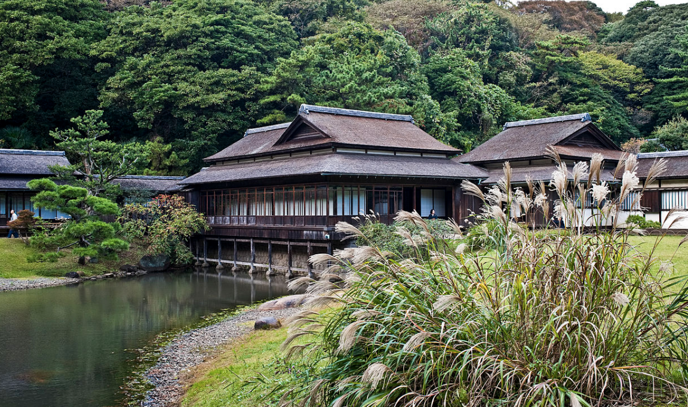
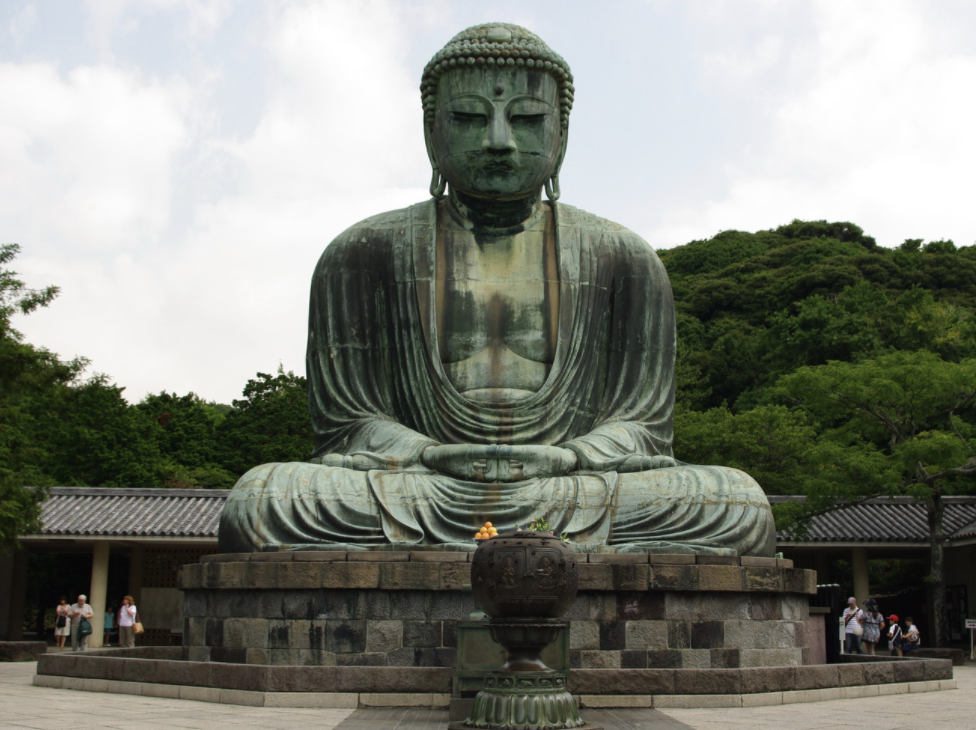

Kanagawa Prefecture is located in the Kanto region of Honshu along Japan’s pacific coast. It is very densely populated. Historically speaking, it was the political and economic epicenter of Japan in the past. Kanagawa Prefecture was also where Commodore Perry landed signing the Convention of Kanagawa forcing Japan to open its ports to the U.S. The region is still scarred from volcanic eruptions, earthquakes, Tsunamis, and bombings from World War II, however, it is a spot of rapid urbanization. The geographical landscapes consist of vast mountains, hills, and flat low-lands and rivers. It is here where they host many world renown festivals and celebrations.
Prefecture Image
Yokohama Minato Mirai 21
Sankeien Gardens
Kotoku-in (Great Buddha of Kamakura)